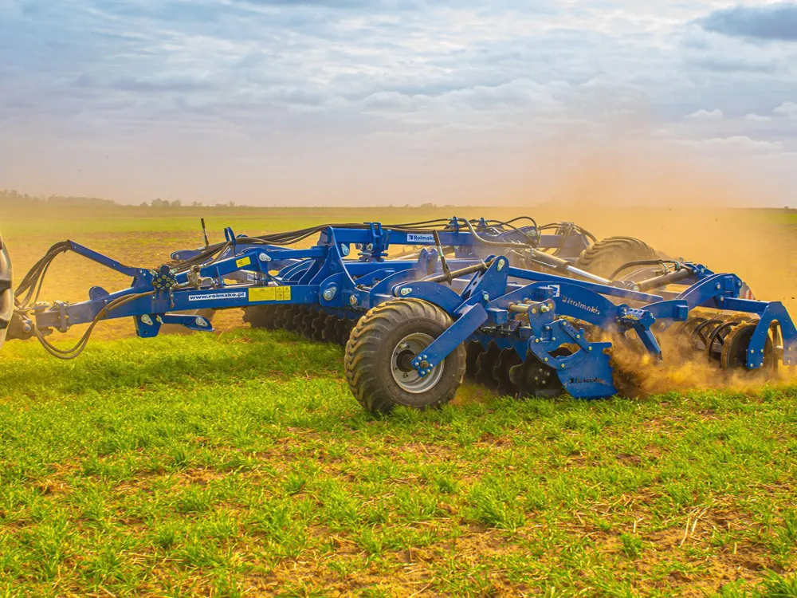

Części do maszyn Rolmako – z ceną i zamówieniem online
Zamiast szukać w katalogach PDF: wybierz maszynę, kliknij pozycję na rysunku i dodaj część do zamówienia. Symbol i numer seryjny maszyny trafiają do biura od razu.
Spróbuj: , ,

Wybierz maszynę
W demo jest 6 katalogów z rolmako.pl. Pozostałe dodam tak samo – z plików PDF, które już Państwo mają.
Części
Jak zamówić część
- Znajdź część
Po symbolu z tabliczki albo z rysunku maszyny. Pozycje na rysunku są klikalne.
- Dodaj do zamówienia
Cena jest widoczna od razu – w złotych, a w wersji niemieckiej i angielskiej w euro.
- Podaj numer seryjny
Model, numer fabryczny i rok produkcji – o to prosi katalog części Rolmako. W tej propozycji biuro potwierdza potem termin wysyłki.